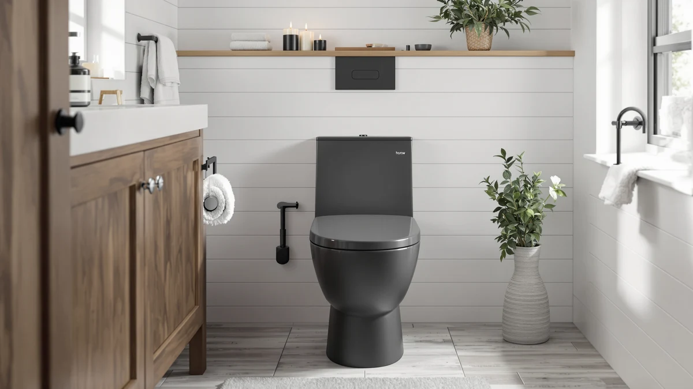

HOROW Non Electric Bidet Review (2026): Worth It?
Prices and picks verified as of August 2026. Independent, reader-supported reviews.


Quick Answer
The HOROW Non-Electric Bidet Toilet costs $289.00, pairs a 12-inch rough-in with an auto-flush system, and adds a built-in manual bidet spray that most one-piece toilets in this category skip. This HOROW non electric bidet review compares it against three lower-priced HOROW, Casta Diva, and EliteEdge elongated one-piece toilets, all within about $30 of its price, to help you decide whether the bidet function is worth the premium.
Our pick: HOROW Non-Electric Bidet Toilet with at $289.00 Check Price on Amazon
Bottom line: our top pick is the HOROW Non-Electric Bidet Toilet with Auto Flush at $289.
Things to Know Before You Buy
- HOROW prices the Non-Electric Bidet Toilet at $289.00, the highest of the four models covered in this HOROW non electric bidet review.
- It uses a 12-inch rough-in paired with an auto-flush system, so measure your drain before you order.
- The bidet function runs on water pressure alone, so it works without electricity or a nearby wall outlet, unlike powered bidet seats.
- None of the three alternatives compared here mention a bidet function in their listings, so the HOROW is the only model built for that use case.
This HOROW non electric bidet review breaks down whether HOROW's $289.00 toilet earns its extra cost over three cheaper elongated one-piece alternatives also covered on this site. HOROW builds the toilet around a 12-inch rough-in, the standard drain distance in most US bathrooms, and pairs it with an auto-flush system and a built-in bidet function that doesn't rely on electricity or a wall outlet. We pulled together everything HOROW publishes about this listing, its price, and its spec sheet, and set it beside the HOROW One-Piece Elongated Toilet 1.28, the Casta Diva Elongated One Piece, and the EliteEdge One Piece Toilet so you can see exactly where the extra money goes.
The short version: if a built-in bidet matters to you and you don't want to install a separate electric seat, the HOROW is worth the $289.00 price, since none of the three alternatives here advertise that feature. The HOROW One-Piece Elongated Toilet 1.28 undercuts it by $20.00 at $269.00, and the Casta Diva and EliteEdge both come in $29.01 lower at $259.99, but all three skip the bidet function entirely. Pick the Non-Electric Bidet model if the bidet spray is the reason you're shopping. Pick one of the three alternatives below if you need a standard elongated one-piece toilet and want to save money instead.
Why You Should Trust Us
Ilane Tall has spent more than ten years researching interior design and bathroom fixtures, including one-piece and bidet-integrated toilets, for Best One Piece Toilets. She built this HOROW non electric bidet review by comparing HOROW's own published listing against the closest competitors on price and category, the same specification-comparison process the site uses for every review. We do not accept payment from HOROW, Casta Diva, or EliteEdge to influence placement, and our Amazon links earn a commission only if you buy, which does not change what we recommend.
Our Research Experience
For this HOROW non electric bidet review, we started with HOROW's own product listing: the five photos of the toilet from multiple angles, the confirmed 12-inch rough-in, the auto-flush system, and the $289.00 price. We then lined up the HOROW Non-Electric Bidet Toilet against the other elongated one-piece toilets already covered on Best One Piece Toilets, narrowing the field to the HOROW One-Piece Elongated Toilet 1.28, the Casta Diva, and the EliteEdge, three models that share the elongated, one-piece category and land within about $30 of the bidet model's price. None of the four has a public rating or review count on this listing, so we weighted our evaluation toward the facts we could verify: published price, confirmed rough-in, flush type, and whether a bidet function is included, rather than guessing at long-term durability we cannot confirm firsthand. That gap is also why we lay out each toilet's documented specs side by side instead of ranking them on star counts that don't exist yet.
Overview & Specs

HOROW Non-Electric Bidet Toilet with
What we like
- Built-in manual bidet function that works without electricity or a wall outlet, unlike powered bidet seats
- Auto-flush system paired with a standard 12-inch rough-in that fits most US bathrooms
- Single-piece elongated design removes the seam between tank and bowl where grime collects on two-piece toilets
Flaws but not dealbreakers
- Priced $20.00 higher than the HOROW One-Piece Elongated Toilet 1.28 and $29.01 higher than the Casta Diva and EliteEdge, none of which include a bidet function
- HOROW's listing doesn't specify the bowl material, so you won't find glaze thickness or warranty terms spelled out
- No public rating or review count yet, so you're relying on HOROW's own listing rather than verified buyer feedback
| Material | — |
| Size | 12" Rough In with Auto Flush |
HOROW builds this toilet in white with the bidet function integrated into the bowl itself rather than sold as a separate attachment. That single-piece build removes the seam between tank and bowl where grime typically collects on a two-piece toilet, and it means you skip bolting on a bidet seat or running a power cord to a nearby outlet. The auto-flush system pairs with a 12-inch rough-in, the standard distance from the finished wall to the drain center in most US bathrooms, so measuring your own drain before ordering still matters even though the rough-in size is common. Buyers who have wanted a bidet but ruled out an electric seat because their bathroom lacks a nearby outlet get a workaround here, since the spray runs entirely off the home's existing water supply line.
At $289.00, it costs more than every other elongated one-piece toilet in this HOROW non electric bidet review, and HOROW doesn't publish the bowl material or a flush rating the way some competing brands do. What you get in exchange is a bidet function that doesn't require electrical work, a real advantage if your bathroom lacks an outlet near the toilet or you'd rather skip installing a powered seat. HOROW has not built up a public review count for this listing yet, so weigh the bidet feature against that missing track record before you buy.
What We Liked
The clearest advantage in this HOROW non electric bidet review is the bidet function itself. Built directly into the bowl, it gives you a manual bidet spray without wiring an electric seat or finding an outlet near the toilet, a real plus in bathrooms where running power to the toilet area isn't practical. The auto-flush system adds convenience over a manual handle, and the 12-inch rough-in matches the standard drain spacing in most US bathrooms, so most buyers won't need to adjust their plumbing to install it. The single-piece elongated design also keeps the tank and bowl seamless, cutting down on the crevices where grime collects on a two-piece toilet with an exposed trapway.
What Could Be Better
The biggest drawback in this HOROW non electric bidet review is price relative to the field. At $289.00, HOROW's bidet model costs $20.00 more than its own HOROW One-Piece Elongated Toilet 1.28 and $29.01 more than the Casta Diva and EliteEdge, and none of those three cheaper alternatives share the bidet function that justifies the premium. HOROW also has not accumulated any public rating or review count for this listing, so we can't confirm long-term durability or real-world bidet performance beyond what HOROW itself publishes. The listing doesn't specify the bowl material, so you can't confirm glaze thickness or warranty terms the way some competing brands publish them. HOROW's listing title identifies the bidet function itself but doesn't break out a separate spec sheet for how the spray operates, so you're relying on the product name rather than a documented feature list for that part of the toilet. None of that erases the bidet function or the auto-flush convenience that make this HOROW worth considering, but weigh it against the cheaper alternatives below.
Who Is It For?
The HOROW Non-Electric Bidet Toilet fits buyers who want a built-in bidet function but don't want to install a powered seat or run an electrical line to the toilet. Anyone who has confirmed a 12-inch rough-in and prefers the auto-flush convenience over a manual handle will find it a good match too. Shopping mainly on price and don't need the bidet? The HOROW One-Piece Elongated Toilet 1.28 in this HOROW non electric bidet review covers the same general category for $20.00 less. And if you'd rather lean on verified buyer reviews before spending $289.00 on a toilet, hold off, since none of the four models here has built up that history yet.
Alternatives to Consider
If the price gap gives you pause and the bidet function isn't a must-have, these three elongated one-piece toilets cover similar ground to the HOROW for less money.

Editor's Pick
HOROW One-Piece Elongated Toilet 1.28
HOROW's own standard elongated one-piece toilet costs $20.00 less than the bidet model in this HOROW non electric bidet review, a straightforward pick if you don't need the built-in bidet spray.
$269.00
Check Price on Amazon
Best Value
Casta Diva Elongated One Piece
At $259.99, the Casta Diva is the cheapest toilet in this comparison, trading the HOROW's bidet function for a $29.01 lower price on a standard elongated one-piece design.
$259.99
Check Price on Amazon
Premium Choice
One Piece Toilet - Elongated
The EliteEdge model matches the Casta Diva's $259.99 price, giving you a second budget-friendly option if the bidet function on the HOROW isn't a priority for you.
$259.99
Check Price on AmazonFrequently Asked Questions
Is the HOROW Non-Electric Bidet Toilet worth $289.00?
It's worth $289.00 if you want a built-in bidet function without wiring an electric seat or finding an outlet near the toilet. If you don't need the bidet, the HOROW One-Piece Elongated Toilet 1.28 in this HOROW non electric bidet review saves you $20.00 at $269.00.
Does the HOROW Non-Electric Bidet Toilet need electricity to work?
No. The bidet function is built into the bowl and runs on water pressure alone, so it doesn't need a wall outlet or any wiring, unlike powered bidet seats that plug in.
How does the HOROW Non-Electric Bidet Toilet compare to the Casta Diva and EliteEdge?
All three toilets in this HOROW non electric bidet review are elongated, one-piece models, but the HOROW is the only one built with a bidet function. The Casta Diva and EliteEdge both cost $29.01 less at $259.99 and share the same general category, but neither lists a bidet spray in its title, so you'd need to add a separate bidet attachment to either one if you decided on price alone.
Final Verdict
This HOROW non electric bidet review comes down to a straightforward trade-off. HOROW's Non-Electric Bidet Toilet delivers a built-in bidet function and an auto-flush 12-inch rough-in, at $289.00, the highest price among the four models we compared, and without the public review history that would let us confirm long-term durability firsthand. If the bidet function and the auto-flush convenience matter to you, HOROW is a sound buy at that price. If you'd rather save money and don't need the bidet, the HOROW One-Piece Elongated Toilet 1.28, Casta Diva, or EliteEdge alternatives above are worth a look.